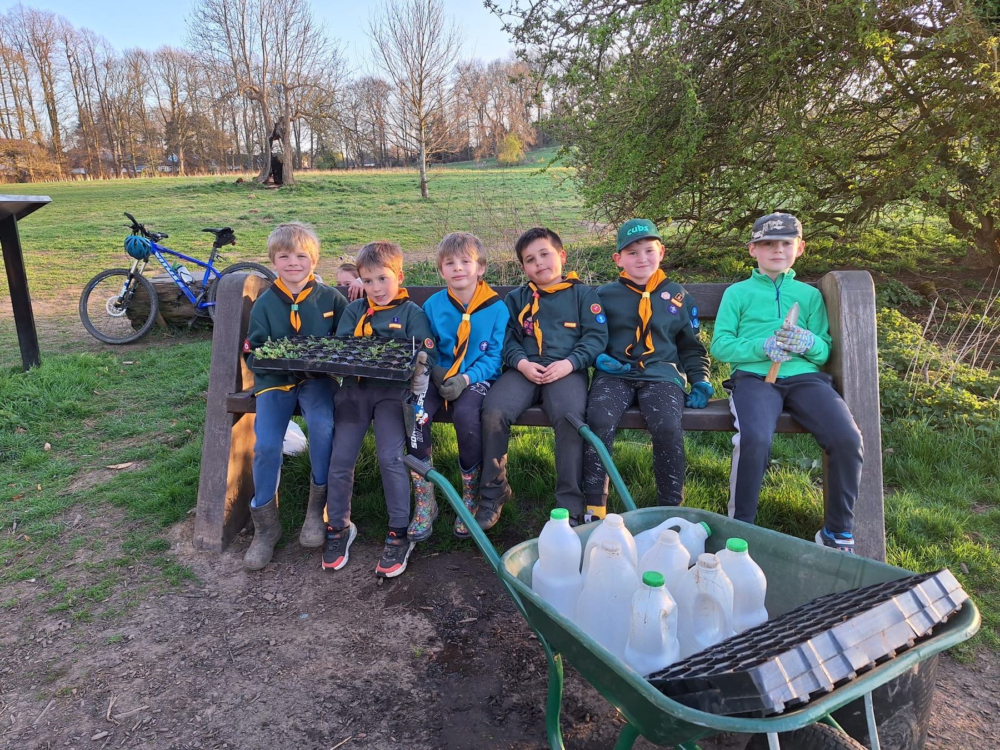
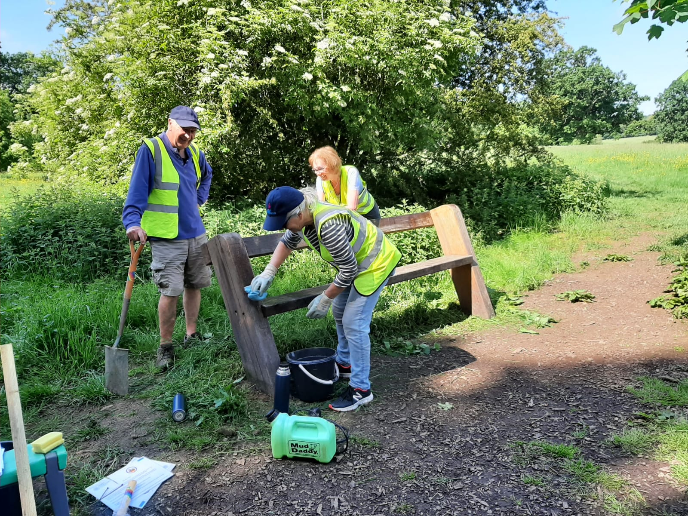
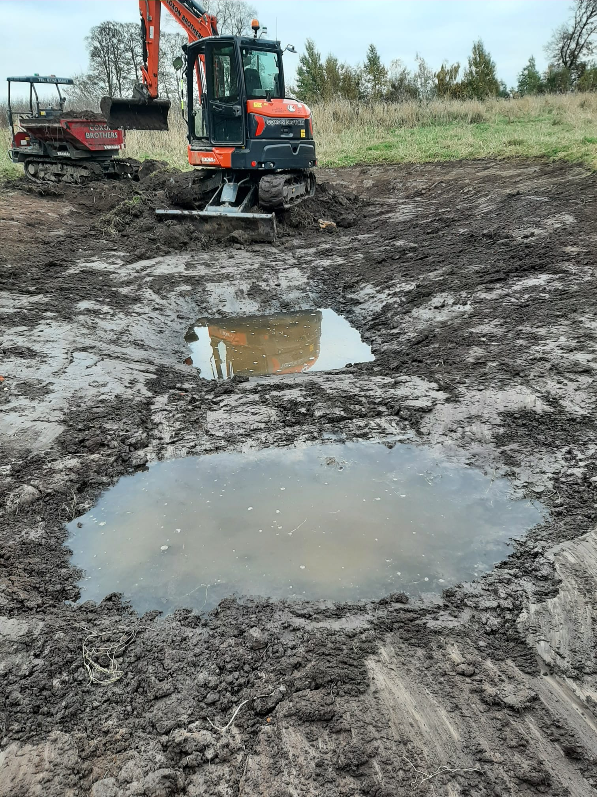

The Friends of Jacob Smith Park (FoJSP) are all volunteers, dedicated to maintaining and enhancing the park for everyone's enjoyment and to support a rich, diverse variety of wildlife.
Part of our work includes regular and ongoing maintenance, such as annual oiling of the oak benches, hand-pulling balsam in early summer and general tidying in the park.
We also undertake one-off projects such as tree planting, sowing of wildflowers and the addition of new benches. See the full list of recent projects at the bottom of this page.

1st Scriven Cubs helping with our wildflower planting.

The annual oiling of the oak benches.
Of course, keeping the park beautiful takes time, so we really appreciate it when people who enjoy visiting the park can also help with maintenance jobs or one-off projects. Giving your time to volunteer with us, no matter how much or little, or whether it is regular or a one-off, is very precious and really does make a huge difference.
Unable to volunteer? Make a donation
Regular volunteering days
We run regular volunteering sessions throughout the year and undertake a variety of jobs from light work such as wildflower planting or shrub maintenance, to more physically demanding jobs, such as bramble or hedge reduction, meadow raking or balsam removal. Details will be available in the park noticeboard.
We'd love you to join us, either regularly or a one-off, for all or part of the session. You can let us know in advance that you plan to come via our contact form or just pop along (it would be helpful if you could bring gloves with you).
Please get in touch via contact@friendsofjsp.org.uk to enquire about other volunteer opportunities or to get involved with any of our other work.

Volunteers clearing cut grass from the meadow.
Current projects

Creating a new wildlife pond.
Recent projects
- Addition of seven new oak benches.
- Installation of new bat, owl and bird boxes.
- Three-year programme employing a contractor to reduce balsam to a manageable level.
- New information board at the park entrance.
- Planting of over 300 trees.
- Planting of over 200 shrubs and plugs, and sowing of wildflowers to attract pollinators.
- Regular summer "Talks in the Park" by local experts (bees, wildflower meadows, benefits of parks and wild spaces, astronomy, and more).
- Renovation of dried out pond and creation of a new pond.
- Replacement of broken fences around veteran trees.
- Installation of a boot scraper at the park entrance.
Ready to get involved?
Whether you can volunteer regularly or join us for a one-off project, we'd love to hear from you.